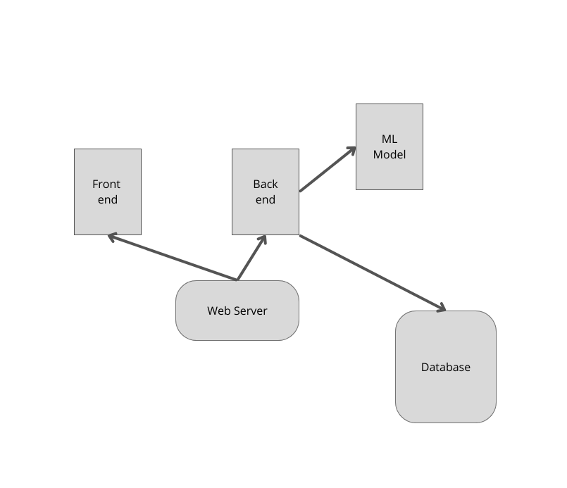
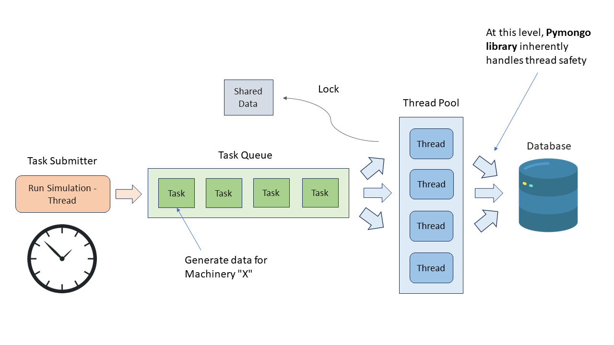
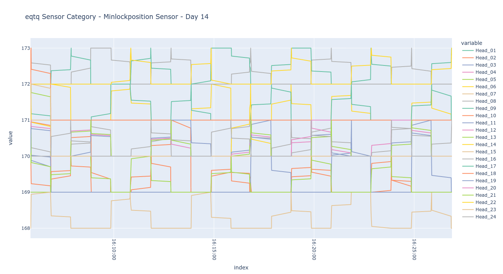
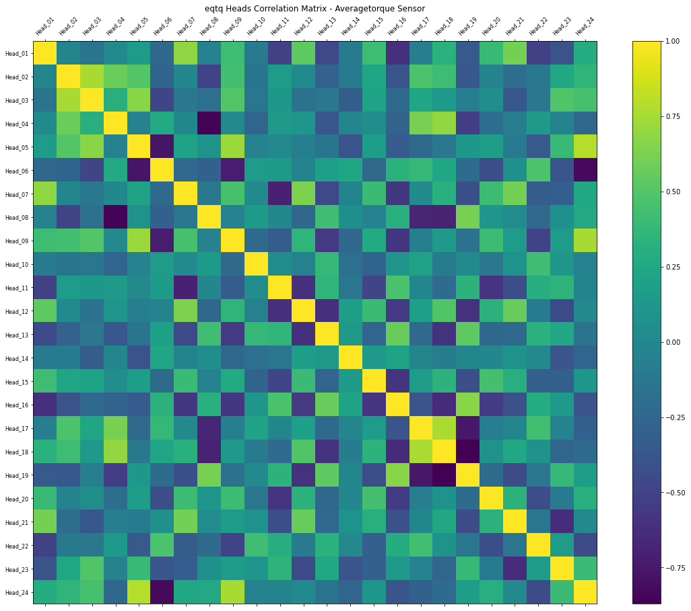
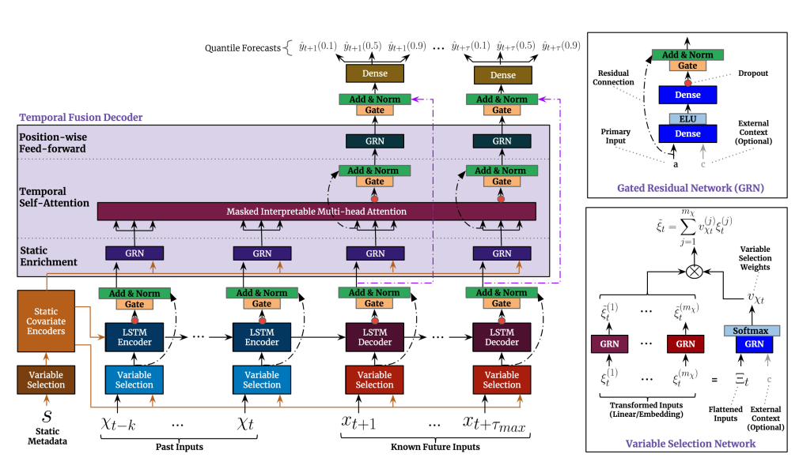

An IoT Synthetic Data Generation Module for Capping Devices
1. Overview
AROL S.p.A. is a leading manufacturer of capping machines for the food and beverage industry, producing automated systems that handle high-throughput bottle capping operations. These machines contain multiple capping heads equipped with sensors that monitor torque, position, and operational parameters in real-time.
The challenge: developing and testing machine learning models for predictive maintenance and anomaly detection requires large amounts of sensor data. However, collecting real production data is expensive, time-consuming, and often restricted due to operational constraints.
This project implements a full-stack web application that generates realistic synthetic sensor data using Temporal Fusion Transformers. The system allows engineers to configure simulation parameters, inject various fault patterns, and generate unlimited training data that mimics real sensor behavior including temporal dependencies and cross-sensor correlations.
2. System Architecture
The application follows a three-tier architecture with clear separation of concerns. The frontend is built with React and TypeScript, providing an interactive interface for configuring simulations. The backend uses Flask with a RESTful API design, handling data generation logic and model inference. MongoDB serves as the data layer, storing both configuration data and generated sensor readings.
The system is containerized using Docker Compose, with separate containers for the frontend, backend, and database. This allows for easy deployment and scaling. The backend implements the MVC pattern, with controllers handling HTTP requests, services containing business logic, and models interfacing with the database through PyMongo.

System design diagram showing frontend, backend, and database components
3. Frontend Application
The React frontend uses TypeScript for type safety and Chakra UI for component styling. The interface allows users to select machinery types, configure sensor parameters, set simulation duration, and control fault injection settings.
State management is handled through React Context API, providing a global store for simulation configurations that persists across component navigation. The application communicates with the backend through Axios, with proper error handling and loading states for asynchronous operations.
Key features include real-time simulation progress monitoring, configuration presets for common scenarios, and data export functionality for downloading generated datasets in various formats compatible with machine learning pipelines.
4. Backend and Thread Synchronization
The Flask backend manages concurrent data generation using a thread pool architecture. Since capping machines have multiple heads (typically 8-16), each head's sensor data must be generated simultaneously while maintaining temporal correlations between heads.
The system uses Python's ThreadPoolExecutor with careful synchronization primitives. A barrier ensures all threads complete their current timestep before advancing, maintaining data consistency. Locks protect shared resources like the database connection pool and the trained TFT model during inference.
Fault injection is implemented at the thread level, where specific heads can be configured to produce anomalous readings (drift, spikes, or complete failures) at specified time intervals. This allows generation of labeled anomaly datasets for training fault detection models.

Thread synchronization schema for concurrent data generation
5. Data Preprocessing
The raw sensor data comes from three categories: EQTQ (torque measurements), DRIVE (motor parameters), and PLC (programmable logic controller signals). Each category contains multiple sensor types recorded at different sampling rates.
Preprocessing involves extracting data from MongoDB, resampling to uniform time intervals, and handling missing values through linear interpolation. The data is then normalized using robust scaling to handle outliers common in industrial sensors.
Correlation analysis between heads revealed strong dependencies that must be preserved in synthetic data. The plot below shows sensor readings across different heads over time, demonstrating the synchronized behavior that the generative model must capture.

MinLockPosition sensor readings across multiple heads

Correlation matrix between different sensor heads
6. Temporal Fusion Transformer
Traditional RNNs and LSTMs suffer from vanishing gradients when modeling long sequences and cannot be parallelized during training. Transformer-based architectures address both issues through self-attention mechanisms that directly connect any two timesteps.
The Temporal Fusion Transformer (TFT), introduced by Lim et al. (2021), extends the transformer architecture for multi-horizon time series forecasting. Key components include:
- Variable Selection Networks: Automatically identify relevant input features at each timestep, handling the heterogeneous sensor inputs
- Gated Residual Networks: Control information flow and enable skip connections for efficient gradient propagation
- Temporal Self-Attention: Capture long-range dependencies with interpretable attention weights showing which past timesteps influence predictions
- Quantile Outputs: Predict distribution quantiles rather than point estimates, providing uncertainty bounds on generated data

Temporal Fusion Transformer architecture (Lim et al., 2021)
7. Model Training
Training is implemented using PyTorch Forecasting, a library built on PyTorch Lightning that provides high-level abstractions for time series models. Separate models are trained for each sensor category (EQTQ, DRIVE, PLC) using Python's multiprocessing to parallelize training across available GPUs.
The training configuration uses an encoder length of 168 timesteps (one week of hourly data) and a decoder length of 24 timesteps (one day prediction horizon). The loss function is quantile loss over the 10th, 50th, and 90th percentiles:
$$\mathcal{L}_q(y, \hat{y}) = \sum_{q \in \{0.1, 0.5, 0.9\}} \sum_t \max(q(y_t - \hat{y}_{t,q}), (q-1)(y_t - \hat{y}_{t,q}))$$
Learning rate is tuned using PyTorch Lightning's learning rate finder, starting from 1e-5 and increasing exponentially until loss diverges. Early stopping monitors validation loss with patience of 10 epochs to prevent overfitting.
8. Results and Conclusion
The system successfully generates synthetic sensor data that preserves the statistical properties and temporal dynamics of real industrial sensors. Generated data maintains cross-head correlations, exhibits realistic noise patterns, and responds appropriately to injected fault conditions.
Key achievements include:
- Web-based interface for non-technical users to configure and run simulations
- Concurrent generation of multi-head sensor data with proper synchronization
- Configurable fault injection for generating labeled anomaly datasets
- Dockerized deployment for easy installation on factory edge servers
- Quantile predictions providing uncertainty bounds on generated values
The generated datasets are being used by AROL's data science team for training predictive maintenance models without requiring expensive data collection from production machines.